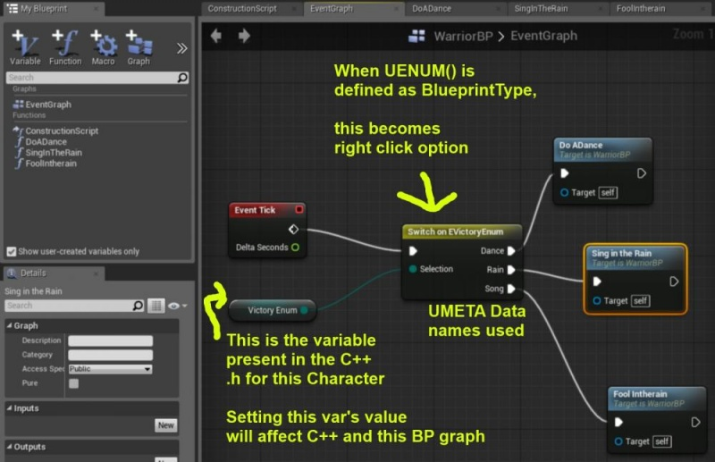

Enums For Both C++ and BP
Contents
Overview
Dear Community,
Here's how you can create your own Enums that can be used with C++ and BP graphs!
Enums basically give you ability to define a series of related types with long human-readible names, using a low-cost data type.
These could be AI states, object types, ammo types, weapon types, tree types, or anything really :)

BP Graphs: Switch on Enum
For BP Graphs, one of the most wonderful things about ENUMS is the ability to use Switch on Enum() instead of having to do a series of branches and testing one value many times
C++ .h File
You need to add the UENUM definition above your class and then actually create a member variable in your class that you want to have be an instance of this enum.
If you want an enum to be used in many different classes (instances of this enum in many classes) you can define the enum in some class that holds all your other important definitions like USTRUCTS().
UENUM(BlueprintType) //"BlueprintType" is essential to include
enum class EVictoryEnum : uint8
{
VE_Dance UMETA(DisplayName="Dance"),
VE_Rain UMETA(DisplayName="Rain"),
VE_Song UMETA(DisplayName="Song")
};
UCLASS()
class YourClass : public YourSuperClass
{
GENERATED_UCLASS_BODY()
UPROPERTY(EditAnywhere, BlueprintReadWrite, Category=Enum)
EVictoryEnum VictoryEnum;
//Rest of Class Code
};
Testing the Value in the C++
//YourClass.CPP
if(VictoryEnum == EVictoryEnum::VE_Dance)
{
VictoryEnum = EVictoryEnum::VE_Song;
}
else
{
VictoryEnum = EVictoryEnum::VE_Rain;
}
Get Name of Enum as String
FString GetVictoryEnumAsString(EVictoryEnum::Type EnumValue)
{
const UEnum* EnumPtr = FindObject<UEnum>(ANY_PACKAGE, TEXT("EVictoryEnum"), true);
if(!EnumPtr) return FString("Invalid");
return EnumPtr->GetNameByValue((int64)EnumValue); // for EnumValue == VE_Dance returns "VE_Dance"
}
Templatized Version
template<typename TEnum>
static FORCEINLINE FString GetEnumValueAsString(const FString& Name, TEnum Value)
{
const UEnum* enumPtr = FindObject<UEnum>(ANY_PACKAGE, *Name, true);
if (!enumPtr)
{
return FString("Invalid");
}
return enumPtr->GetNameByValue((int64)Value).ToString();
}
// Example usage
GetEnumValueAsString<EVictoryEnum>("EVictoryEnum", VictoryEnum)));
Also, if you want to avoid retyping the enum class name as a string on every call to GetEnumValueAsString, you can also define a c++ macro in the .h file where the function is defined.
For example, if you have defined GetEnumValueAsString in a class UTextUtil in TextUtil.h, you would have this macro
#define EnumToString(EnumClassName, ValueOfEnum) UTextUtil::GetEnumValueAsString<EnumClassName>(FString(TEXT(#EnumClassName)), (ValueOfEnum))
This way in any other file where you want a FString from an enum value, you would do :
FString EnumString = EnumToString(EVictoryEnum, EVictoryEnum::VE_Dance);
GetEnumFromString
If you want to retrieve an Enum value after storing the Enum as a string, here is how! ♥ Rama
template <typename EnumType>
static FORCEINLINE EnumType GetEnumValueFromString(const FString& EnumName, const FString& String)
{
UEnum* Enum = FindObject<UEnum>(ANY_PACKAGE, *EnumName, true);
if(!Enum)
{
return EnumType(0);
}
return (EnumType)Enum->FindEnumIndex(FName(*String));
}
//Sample Usage
FString ParseLine = GetEnumValueAsString<EChallenge>("EChallenge", VictoryEnumValue))); //To String
EChallenge Challenge = GetEnumValueFromString<EChallenge>("EChallenge", ParseLine); //Back From String!
Summary
Now you know how to make enums that are project specific, that can be used in both C++ and Blueprints!
Enjoy!
( )